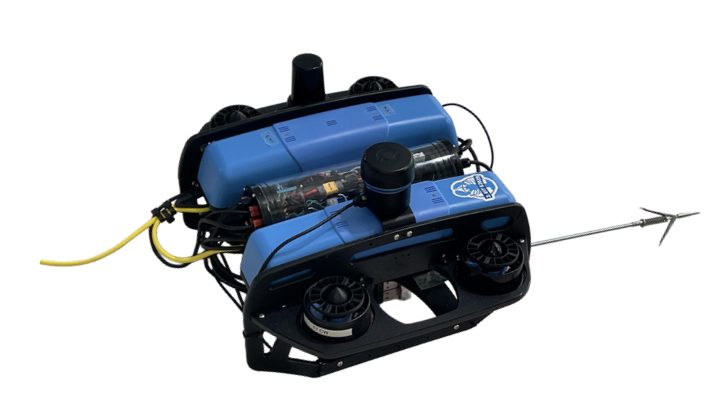
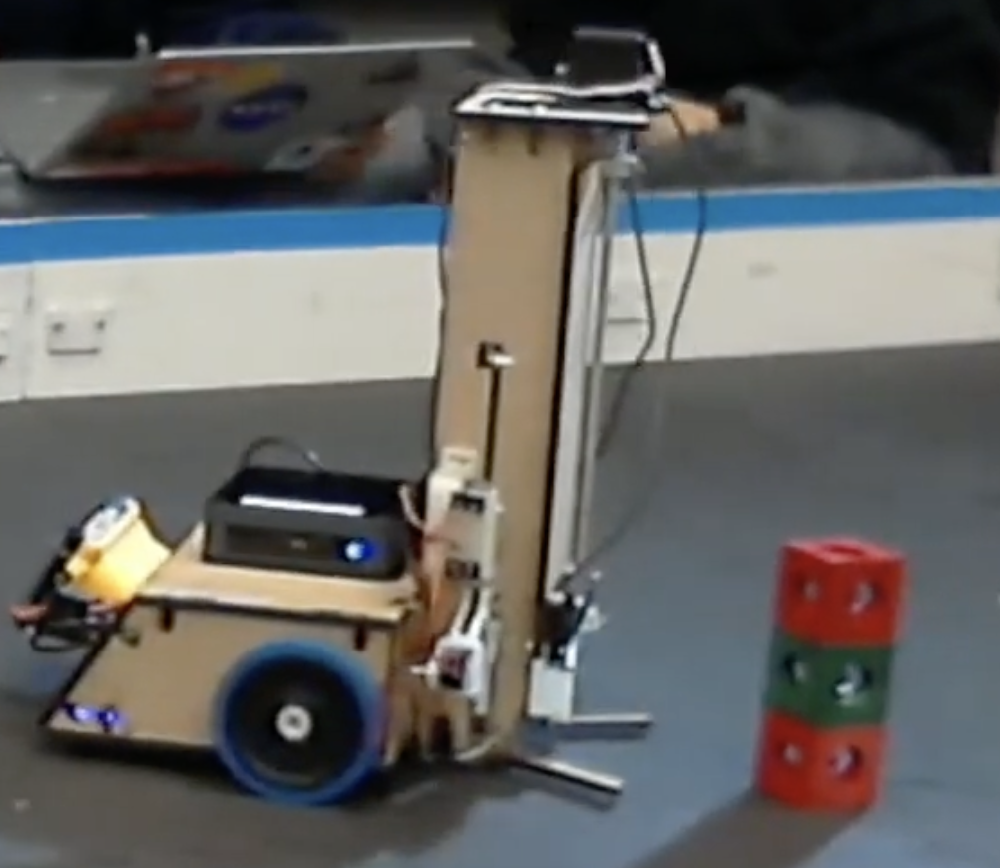
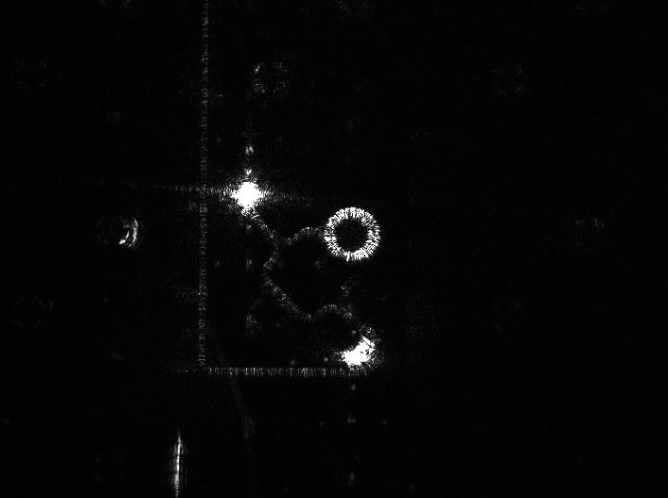
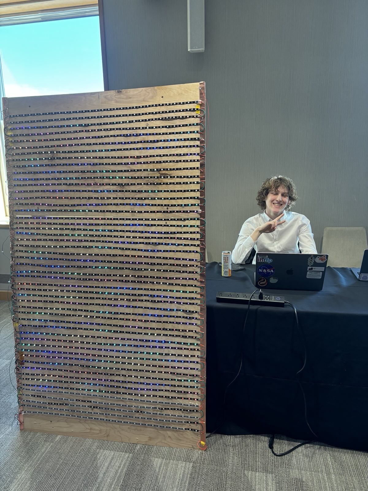

MIT Mechanical Engineering student specializing in robotics, control systems, and autonomous systems with hands-on experience in research and practical applications.

Developed an ROV-based system for retrieving abandoned "ghost" lobster pots from the ocean floor.
Developed a finite-dimensional control-affine model and robust trajectory-tracking controller.

Built an autonomous robot for the MIT MASLAB competition that could identify, collect, and stack colored cubes.

Developed automated optical characterization and laser trimming methods for silicon photonics.

Designed and built a large LED display with 1500 individually addressable LEDs controlled via the FastLED library.
I'm a Mechanical Engineering student at MIT with a focus on robotics, control systems, and autonomous systems. My work spans from theoretical control algorithms to practical implementation in real-world robotics applications.
I have experience in research environments, having contributed to projects at the MIT Research Laboratory of Electronics and participated in competitive robotics challenges like MASLAB.
My technical interests include trajectory tracking, adaptive control, sensor fusion, localization, and the integration of complex robotic systems.
B.Sc. in Mechanical Engineering
Massachusetts Institute of Technology (MIT)
2022 - 2026 (Expected)
GPA: 3.6/4.0
Undergraduate Researcher
MIT Research Laboratory of Electronics
Feb 2023 - Nov 2023
lankford@mit.edu
Cambridge, MA